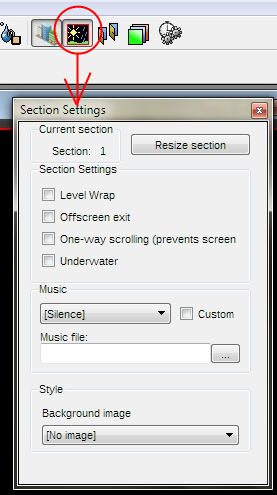
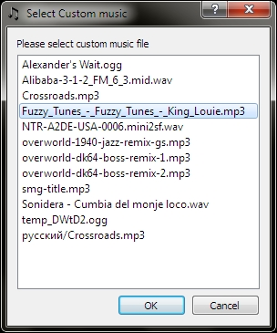
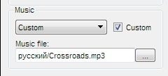

Each section have his settings:
- Music: on this section will be played selected music
- Costom music file: here you will define custom music file, what allows to use music not from staff list.
- Background: it is a picture, what will be shown in back of this section.
- Connect left-right sides (Level Warp) - all outed offscreen objects will be appeared and entered from opposite side of this section.
- Offscreen exit - allows to player exit from level on go out from screen of this section
- One-way scrolling (No turn back) - allows to move player only to right side. Camera will not be scrolled to left.
- Underwater - apply to total area of current section the underwater physics.
For show section settings toolbox, simply press on sprcial icon on toolbox, or menuitem [View -> Section settings]
Here you can edit all section settings and resize the section.
Section settings toolbox

You can set music from list, or you can use your custom music files. You must place this files into same folder with level file of into any subdirrectory inside directory with your level file.
Music list window (Displaying all music files, even inside subdirectories)

Custom checkbox will be set automaticaly if you select in the music list the "Custom". And then you check the custom checkbox, "Custom" field in the music list will be selected automatically.
Custom music field must content the filename of custom music. You can use relative paths, but recommend using the "/" separator instead "\".
Custom music field

Copyright © 2014 Platforger Game Engine by Wohlstand project. All rights reserved.